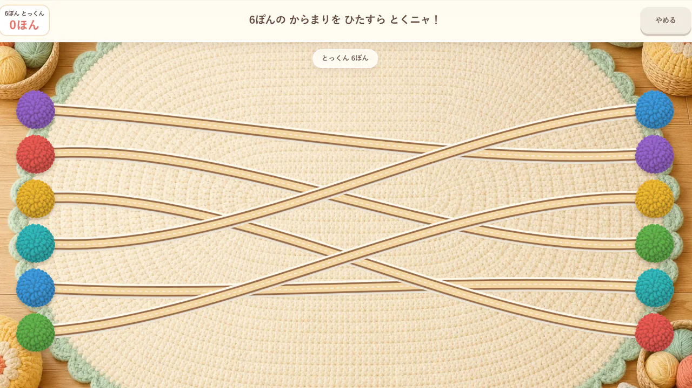

このゲームについて
たくさんの毛糸が交差する中から、選んだポンポンにつながる一本を目でたどります。線が重なる場所でも道筋を確かめ、同じ色の先を見つけます。
遊び方
始点のポンポンから毛糸をゆっくりたどり、つながっている先を選びます。練習と特訓で線の見方を試せます。
ゲーム中に行うこと
- 絡まった線を目でたどる
- 同じ色につながる一本を見つける
ここではゲーム中の活動を説明しています。能力の向上や、特定の効果・改善を保証するものではありません。

たくさんの毛糸が交差する中から、選んだポンポンにつながる一本を目でたどります。線が重なる場所でも道筋を確かめ、同じ色の先を見つけます。
始点のポンポンから毛糸をゆっくりたどり、つながっている先を選びます。練習と特訓で線の見方を試せます。
ここではゲーム中の活動を説明しています。能力の向上や、特定の効果・改善を保証するものではありません。